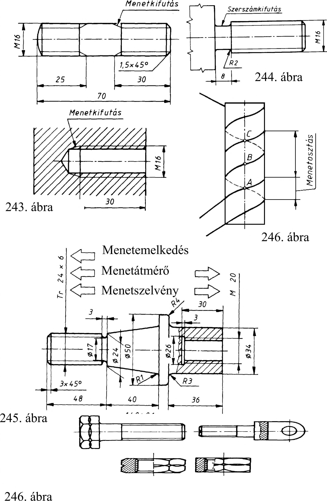

13. Csavarok, csavarkötések 13.2.4. Menetkifutás, szerszámkifutás és beszúrás A felhasználható (teljes profilú) menethosszt hasznos menethossznak nevezzük. A nem használható menetrész a menetkifutás (243. ábra). A menetmángorló szerszámnak az orsó végén szerszámkifutásra van szüksége (244. ábra). 13.3. Csavarmenet méretmegadása A csavarról készített jelképes műszaki rajz csak arról tájékoztat bennünket, hogy az alkatrészen csavarmenet van. Nem határozza meg azonban annak sem a fajtáját sem a méretét. A csavarmenet jellemző adatait, méreteit méretvonalon külön meg kell adnunk 13.3.1. Jellemző méretek megadása A csavarmenetet meghatározza a menetfajtát meghatározó betűjel és a hozzá kapcsolódó méretszám. A betűjel a menetszelvény alakjára, a méretszám pedig az orsómenet külső átmérőjére utal, amelyet kiegészíthetünk a menetemelkedés számértékével (pl. M20xl,5). A különböző csavarmenetek szelvényét, betűjeleit, méretmegadásának példáit a 15. táblázat tartalmazza. A csavarmenetek szelvényeit szabványok írják elő, a menetek elkészítéséhez ezeket veszik figyelembe (245. ábra). A csavarmenetek általában egybekezdésűek, azonban készíthetünk két- vagy több-bekezdésű csavart is. Ekkor egy körülfordulásra az anya (vagy az orsó) útja megnő. A kétbekezdésű menet keletkezését szemlélhetjük a 246. ábrán bemutatott csavarvonalak megrajzolásával. A két szomszédos csavarvonal távolsága ez esetben nem a valóságos menetemelkedés, hanem a menetosztás. A több-bekezdésű csavarmenetet a méretmegadáskor úgy is meghatározhatjuk, hogy a menetemelkedés után zárójelben megadjuk a szomszédos menetek távolságát, a menetosztást mm-ben és ennek jelét a P-t. Pl. Tr20 x 8 (P4). Ez azt jelenti, hogy 20 mm átmérőjű orsóra kétbekezdésű 4 mm menetosztású, 8 mm menetemelkedésű szabványos trapézmenetet kell készíteni. A bekezdések számát a következő módon számíthatjuk: ^ , , Menetemelkedés Bekezdések szama = Menetosztás 13.3.2. Csavarmenet felületi érdessége A csavarmenet felületi érdességét megadható a kirajzolt menetszelvény profilján vagy az azt meghosszabbító mutató vonalon a menet méretsegédvonalán ill. 13.4. Balmenetű gépelemek jelölése A balmenet betűjele: LH (LeftHand). Ezt a betűjelet az utolsó jel (szám, betű) után tüntetjük fel (pl. M24 x 1,5 LH). A balmenetes elemeket külön horonnyal is megjelöljük, hogy az alakján is látható legyen A figyelem felkeltése érdekében ezért minden balmenetű csavart és anyát, figyelmeztető horonnyal kell ellátni. 13.5. Csavarmenetek tűrése és illesztése Több más gépelemhez hasonlóan a csavarmenetet is tűréssel készítik és illesztik. Ezt is előírhatjuk a csavarmenet méreteinek meghatározásakor. A csavarmenetek tűrésrendszere azonos módon épül fel, mint a már tanult szabványos tűrésrendszer. Ennek megfelelően tehát a tűrés az alapeltérést meghatározó betűjelből és a tűrésnagyságot meghatározó minőségszámból áll. Az anyamenetre nagybetű (gondoljunk a furatra), az orsómenetre kisbetű (csap) vonatkozik. A különbség csak annyi, hogy első helyen a minőséget jelző számjel áll, majd ezt követi a tűrés betűjele (pl. 6g). Tűrést általában a csavarmenet középátmérőjére, ill. az anyamenet belső és az orsómenet külső átmérőjére írhatunk elő. Előírhatunk tűrést egyidejűleg az orsómenet közép- és külső átmérőjére is (247. ábra). 70
